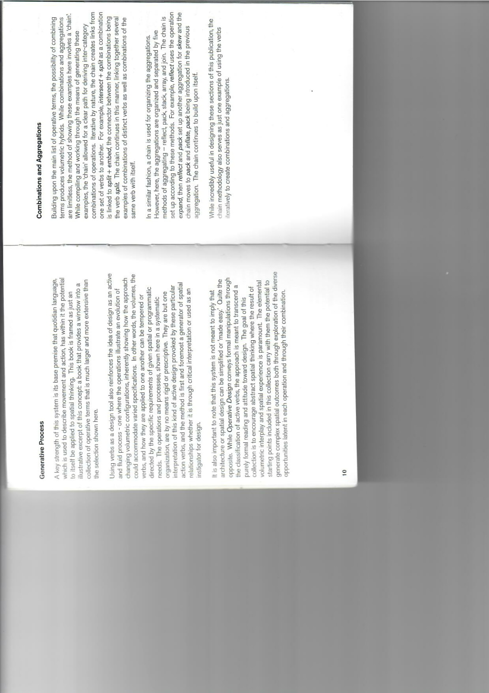
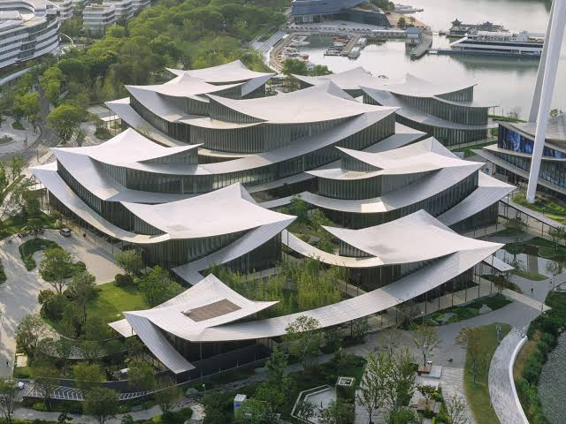

01. 설계 지식 입력건축사의 언어와 사례를 좌표 복사가 아닌 원리로 추상화

건축언어 BOOK
건축사가 제공한 설계 언어·도해
69p

ArchDaily + 레퍼런스
프로그램·형상·공간관계의 시각 사례
338
관계 어휘 · 현재 7축
PRESERVE 보존CARVE 비우기
STEP 단차BEND 흐름
BRIDGE 연결CLUSTER 군집
FOLD 절곡
중요: 이미지/책을 많이 넣는 것만으로 학습되지 않는다. VLM이 관계를 추출하고, 실제 컴파일·평가 결과가 다시 기억으로 돌아와야 한다.